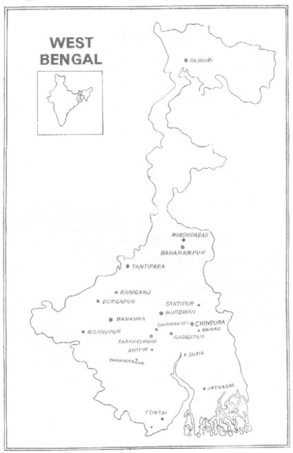

|
I will marry my daughter in the Land of Hattamala
Where cows and oxen pull the plough together
And everyone brushes their teeth with diamond powder
Where trout and wax-gourds are available by the ton
Where, if one goes to fetch one’s daughter,
The mother-in-law’s back is invariably turned 1
Such is the Land of Hattamala! What exquisitely beautiful fairy-stories which, at the time of their being told, leave the taste of malpo 2 in the narrator’s mouth, and the taste of puli cake 3 in the mouth of the one listening. Oh, such is the ancient and attractive Land of Hattamala.
There are so many different stories about the Land of Hattamala… All the young and old people of this country clean their teeth with diamond powder. In former times all the little boys and girls used to continually nag their mothers: “We won’t clean our teeth with diamond powder any more; we want to clean them with gold dust!” The mother then explained, “Look, if rubbed with diamond powder, the teeth will be very strong. You will even be able to chew fried iron peas without any effort. If cultivated green peas are not available at the ration-shop, then iron peas may be brought from the Durgapur 4 iron factory and eaten after frying them a little. And so, you see, there are many advantages to cleaning the teeth with diamond powder. And if you clean your teeth with gold dust, whenever you laugh 5 genuine pearls will pour out of your eyes, ears, noses and mouths in an unending stream. You spend the whole time laughing, and therefore the thousands and thousands of pearls will make the house continually dirty. Would you rather I cook for you or spend my time cleaning the house 700 times a day? It’s up to you.”
The children accepted this argument. From that day onwards all the young boys and girls have been cleaning their teeth with diamond powder.
Such is the Land of Hattamala. There, shoal upon shoal of trout, their fins out-stretched, move about on land, in water and in air. They are just like the trout found in the Calcutta markets, except that each of them weighs no less than 80 kilos. Another difference is that their scales are made of real silver, and that on some of them light red enamelling work has been done. None of the goldsmiths of Calcutta could possibly do enamelling work of that calibre. That country’s wax-gourds 61 are somewhat similar to the one’s found in Calcutta. The difference is that they are shaped just like the large ornamental boats from East Bengal, 5 and their seeds are large, genuine pearls.
Such is the Land of Hattamala. 6 To compile all the stories about this country is an impossible task, because those who go there in search of stories never return. After seeing the wonderful things of that land, and tasting its delectable eatables, they stay on: the question of returning doesn’t arise in their minds.
One day in Calcutta a mynah bird, finding the door of his cage open, slipped out and flew away. He flew up into the open sky. After a while, the idea of going to Hattamala came into his mind. He flew in the direction of the Land of Hattamala and thought, “I’ll do my monthly shopping over there.”
While he was busy shopping many interesting stories drifted into his ear and settled there. He immediately copied them down in his note book. A little later the sun set. The mynah bird cannot see anything in the dark, and so, in a do-or-die attempt, he rushed back to Calcutta where he settled on the top branch of a swamp-pea tree at Ballygunge. 7 In the glow of the moon-light he told all these entertaining stories about Hattamala to his assembled maternal and paternal cousins, that is the large Indian parakeets, tailor birds, cockatoos and bulbul birds, and also to a number of men standing hidden in the background who also managed to lend an ear.
Hattamala is such a fascinating land, you know. At that time gold was incredibly cheap in Hattamala. All the houses were made of gold and nothing else. The animals and birds had an audience with the King to submit their petition: “Kindly speak with the Council of Ministers and get the order passed that we may convert our bodies into gold.” The Honourable King said, “That’s not very much to ask. I’ll get it done right away.” From that day onwards, the birds’ bodies have been golden. The only additional work which had to be done was some red enamelling on the parrots’ golden beaks.
What a large palace! And yet inhabited by so few people. At that time Prince Abhijit 8 was only seven years old, and Princess Madhumita,9 five.
On that day the dawn was bathed in scintillating light. Clouds started building up in the early afternoon. Having completed the preparation for the forthcoming examination, Abhijit went out to play cricket. Princess Madhumita, seeing that her brother was not at home, also ran off in the direction of the cricket field. On the way there, she met a fan-tailed pigeon who said, “Madhumita, you shouldn’t be running around like that. Sit here on my back and use this Murshidabad 10 silken thread as your rein.” Then many Indian blue-rock pigeons hurriedly flew down. The fan-tailed pigeon told them, “Fly around us and keep guard.”
At that moment, as if from nowhere, a flock of hawks and a flock of sea-gulls flew down from the sky. A terrible fight took place between the hawks and sea-gulls and the flock of pigeons. So fierce was the battle that the whole sky shook, a violent tempest blew up, boats sounded their sirens; aeroplanes, stricken with fear, landed on the ground, and all the other birds went into hiding in their respective nests. What a frightful battle! Such a battle had never been seen before by any living being. At the fight’s end the sea-gulls and hawks sounded the retreat and fled away in the direction of their homes, saying, “Come on, brothers, run for your lives”. With raised tails they scurried away.
The pigeons took shelter in a pomegranate tree in the courtyard of a peasant’s house. Their doctor applied ointment to their wounds and tied one or two small bandages. No one’s injuries were very serious. Finally, after resting for a while and eating some puffed rice, potatoes and savoury pancakes, they set off on their journey. For a time everything went well; no mechanical trouble was detected in the wings. Just then, a giant condor (the world’s largest flying bird) set out from a cave situated high in the Alps mountains. The condor, making a swishing sound with it’s wings, rose up quickly into the sky; that is, it flew off in the direction of the flock of pigeons. Being attacked by the condor did not worry the pigeons in the least. But as you can imagine, they were very anxious about the safety of Madhumita.
They had lost their way and found themselves over a dense forest. The fan-tailed pigeon had made a very big mistake at the time of leaving the house he had forgotten to put the compass in his pocket. On that day the sun was hidden behind clouds; it was not night, and therefore the pole star was not visible. And so, how could the right direction be determined? They made the following plan. “First of all we’ll leave Madhumita in a safe place and then jump into the fierce battle with the condor; nail against nail, tooth against tooth, beak against beak.” After sitting Madhumita on a strong branch of a tall tree, they set off for the fight.
Now, that very tree on which Princess Madhumita was sitting happened to be a huge chocolate tree. A chocolate was hanging beside each of the tree’s leaves. Each chocolate was wrapped up in a multi-coloured paper wrapper on which the full details of the contents were written. There were ordinary chocolates, Brazilian chocolates, chocolates from the country of Chile, milk caramels, condensed milk caramels, Japanese toffees of a brilliant white colour, Swiss toffees made of aromatic roses, chocolates which melt like butter the moment they are put in your hand and some which, the very instant they are placed on the tongue, slip effortlessly down the throat. The Princess ate as many chocolates as she could manage.
Just then, the forest was enveloped by dense darkness. Even the man at one’s shoulder could not be seen. One’s own hands and feet were also invisible. Therefore there was no hope at all of seeing the chocolates. While perching on the branch of that tree, Madhumita nodded off to sleep.
The next day at the break of dawn Madhumita thought, “What should I do now?” She looked around and saw, a short distance away, an ashke cake 11 tree. Someone had, would you believe, left a ladder leaning against its trunk. Madhumita briskly scaled the ladder and climbed into the tree. Warm ashke cakes were hanging everywhere. Madhumita picked a few of them and then wondered how she should eat them. Ashke cakes should be eaten either with molasses or with treacle. But, after looking this Way and that, not a single molasses tree or treacle tree was to be seen. With her head cupped in her hands she thought over and over again, “Will these nicely puffed ashke cakes simply hang here in this way for nothing?”
At that moment, thousands upon thousands of multi-coloured honey bees came in her direction. Madhumita asked: “Who are you brothers? From which country have you flown from?”
They replied: “You must be aware, sister Madhumita, that there are many types of honey-bee in the world. In this forest we are of three varieties. One species is called ‘rock bee’. They are large in size, have a sharp sting and very potent poison. Do you know, the most interesting thing about them (as they said this their mouths became quite watery) is that they can store up to ten or fifteen kilos of honey in their hives. They are, however, unwilling to be easily tamed. The second species name is ‘bush bee’ and the third species is called ‘epis indica’. The bush bees’ hive is a little small, they give less honey, their sting is less sharp, their poison a little less painful. Epis indica is of the same type, to some extent. Only the rock bee builds it’s large hives in trees. The others make their hives in the courtyards of houses. Furthermore, some make a hole in mud walls and build their hives inside that. But all these types of hive produce less honey.”
Madhumita said: “Really, I never knew so many things.”
The honey-bees said: “We bees gathered here today represent all the different species.”
Madhumita inquired: “What brings you here?”
The bees answered: “We noticed that, for want of molasses, our Madhumita was unable to eat ashke cakes. Therefore, we decided to give 1000 kilos of honey collected from all our different hives to Madhumita”.
Madhumita started eating ashke cake after ashke cake dipped in honey.
While Madhumita was gleefully dipping the cakes in the honey a huge ghost called Ekanore 12 appeared beside a giant, straight-trunked palm tree.13 At first Madhumita thought that he had come to take some of the honey covered ashke cakes from her. Then she saw that he had no such intention. He was a very good person and seeing that Madhumita was obliged to eat the cakes with her hands, felt sorry for her and wanted to help. He had therefore brought a giant stainless steel bowl for her use. The ghost said: “Put the cakes in the bowl and eat them. That’ll be more convenient for you.”
Madhumita said, “Brother Ekanore, you are such a kindhearted person.”
Ekanore said “Before, when I was alive, I wasn’t such a good man. Later I realized that bad deeds produce bad results. That’s why now I always do good deeds. And therefore, I suppose you could now call me a good man. Haven’t you ever heard about me?”
Madhumita replied: “Well, I can’t recall having heard anything.”
Ekanore said “At night, don’t you ever cry when you’re about to go to bed?”
Madhumita replied: “Yes, I used to cry. Even now I cry.”
Ekanore asked: “When you cry, doesn’t your mother ever recite any rhymes?”
Madhumita replied: “Yes, she does:
There is an Ekanore
Who lives upon a palm tree
His ears are as big as bamboo-trays 14
His teeth as long as radishes
With a straw rope around his waist
He moves from house to house
That very child who cries
He ties inside his shoulder bag
Lifts him up and beats him against the ground.”
Ekanore said: “That’s right, that’s right, I am that very Ekanore.”
Madhumita said: “Brother Ekanore, I cannot express what a joy it is to have met you. Tell me, do you always live up in the trees?”
Ekanore replied: “This tall palm tree here is my residence. I do my duty sitting on its top.”
Madhumita asked: “What duty?”
Ekanore said: “This forest ends at a distance of 150 miles from here. After that the witch’s kingdom starts. I sit up there on the palm tree with a telescope in hand to see if the witch is coming this way or not. If I see her coming I immediately warn all the beasts of the forest. I tell the monkey brothers, ‘Make your hoop hoop sound.’ Everyone will then understand that the witch is on her way here. I tell our jackal brothers, ‘Put your tails in your mouths and make the pheu pheu sound.’ Everyone will then be alerted that the witch is coming. Ah yes, I forgot to say, the sound that the jackals make after putting their tails in their mouths is called ‘pheru’ in literary Bengali, whereas in spoken Calcutta Bengali we say ‘pheu’. My little Madhumita, you must certainly have realized that in this jungle there isn’t a single living monkey, nor a single living jackal. There are only monkey ghosts and jackal ghosts.”
Madhumita, at the same time, was speaking with Ekanore, looking at the freshly made ashke cakes, dipping them into the honey and eating them. The cakes were spotlessly white and also nicely puffed, as light as cotton, and perforated with innumerable pores: one, two, one thousand, ten thousand. That’s why her grandmother said the other day:
“You have seen the dove, my love, and have yet to see the trap.
You have eaten ashke, my love, but haven’t counted the pores.”
After trying in vain to count the pores, Madhumita busied herself in the important task of eating cakes. Just then, a female ghost came down in great haste from a distant Siamese rough bush.15 Using a tape Madhumita calculated her height to be 29 feet. The female ghost went up to Ekanore first and said, “Listen to this, my dear. You know that witch who goes to take a breath of fresh air on her bamboo-tray helicopter every day at dawn and dusk… well, today at dawn she didn’t go. It’s my guess, therefore, that today she will come to the forest a little early. That’s why it won’t be safe for anyone to stay standing down here for much longer. Now, because it’s such a rainy and overcast day, I have made rice and lentil stew and fried papar 50 for you and brought it here. Eat it quickly and then climb straight up onto the tree. After doing the washing up, I will also climb up into the Siamese rough bush.”
Madhumita asked: “Are you our sister-in-law?”
Ekanore said: “Yes, Madhumita, this female ghost is my wife, your sister-in-law. Her full name is Mrs. Fish-Eating Ghost.”
Madhumita asked: “What do you mean by ‘fish-eating ghost’, brother Ekanore?”
Ekanore said: “Oh, then you don’t know… All those women in the world who only want to eat fish in their worldly life, that is, whose greed for fish is extreme, become fish-eating ghosts after their death. Fish-eating ghosts have one distinctive characteristic; only if the odour of rotten fishes’ scales drifts into their nostrils can their eyes close in sleep. They have been suffering from this disease for quite some time. No allopathic or ayurvedic 16 doctors have been able to cure this ailment of theirs.”
Madhumita said: “My goodness, it must be a very serious disease. In that case sister-in-law, Fish-Eating Ghost, when stricken with illness, why do you strain yourself so much?”
Fish-Eating Ghost replied: “You see, the disease comes at night, not during the day. When the deep night has descended on all sides and there is only darkness after darkness and, from afar, the hooting of owls is audible, in that very setting, sitting on the top branch of the Siamese rough bush the desire for sleep comes and yet sleep never falls on these wretched eyes of mine. At that critical time I have to rush to someone’s dustbin to inhale the odour of rotten fish, and then come back to fall asleep immediately.”
Madhumita said: “I see.”
Then, Madhumita saw two female ghosts taking a stroll in a nearby park and asked: “Who are they, sister-in-law, Fish-Eating Ghost?”
Fish-Eating Ghost answered: “So you don’t know. One of them is a mother-in-law ghost, and the other a daughter-in-law ghost. Their story is well known, haven’t you heard it?”
Madhumita said: “No, I haven’t. Will you tell me?”
Fish-Eating Ghost said: “Yes, but I’ll tell you quickly, otherwise the witch will be upon us.”
Fish-Eating Ghost told the following story:
[The following section was also printed separately as part of “Ghost In-Laws” in Sarkar’s Short Stories Part 1. This is the Sarkar’s Short Stories Part 1, 1st edition, version.]
Once there was a mother-in-law and a daughter-in-law who used to quarrel fifty-eight times every day. One day they were working together in the kitchen. The mother-in-law was rolling rotis 17 and the daughter-in-law was cooking them. The mother-in-law yawned sleepily and said,
“What a nuisance this yawn is. I’ve got a feeling
It portends the death of my daughter-in-law’s brother.”
The daughter-in-law shook with indignation from head to toe. She also yawned, and said,
“This yawn is such a nuisance. I’ve got a feeling
It portends the death of my father-in-law’s brother-in-law.”
The mother-in-law was outraged by this remark, but had to keep her feelings to herself. It was definitely a case of “tit for tat.” The mother-in-law had overlooked one of the basic principles of life – always think of the consequences before abusing others – and had to pay for it.
“This calls for a change in tactics,” thought the mother-inlaw. “I’d better be a little more cunning.” The next day she announced, “We’re going to make seven hundred varieties of cake today.” So the mother-in-law and the daughter-in-law went off to the kitchen together to make cakes. They made so many cakes: steamed cake, steamed rice cake, fried cake, juicy-cake, condensed-milk cake, banana cake, cake-to-win-over-your-sister-in-law, cake-to-win-over-your-mother-in-law, and cake whose aroma fills the whole neighbourhood. The crows were standing nearby, waiting hopefully; the kites were looking on greedily from afar; the neighborhood’s small children were anxiously waiting; and the old folk of the locality were thinking, “If one or two bowls happen to be thrown in this direction, it won’t be such a bad thing.”
There was still enough time to eat before the evening prayer 18 so the mother-in-law served everybody with bowls full of cakes. But not even once did she say, “Daughter-in-law, would you like to taste one or two cakes?” The daughter-in-law realized that the mother-in-law was getting her revenge. Suddenly the mother-in-law left the kitchen. The daughter-in-law seized her opportunity and greedily stuffed four hot fried cakes into her mouth. Unfortunately the mother-in-law returned as suddenly as she had left, putting the daughter-in-law in a most difficult situation. She couldn’t swallow the cakes, nor could she spit them out, nor could she chew them, nor even could she speak. She was really in quite a fix!
The mother-in-law asked, “Daughter-in-law, why aren’t you speaking?” “Mmmm… mmmm… mmmm… mmmm,” said the daughter-in-law.
The mother-in-law asked, “Daughter-in-law, why isn’t your mouth moving?”
“Mmmm… mmmm… mmmm… mmmm,” said the daughter-in-law.
The mother-in-law asked, “Daughter-in-law, why are your cheeks so swollen?”
“Mmmm… mmmm… mmmm… mmmmm,” said the daughter-in-law.
The perplexed mother-in-law called an assortment of doctors - homoeopaths, allopaths and ayurvedic physicians – but none of them could do anything for her daughter-in-law. A famous pathologist carried out an extensive examination, but was unable to diagnose the disease. X-rays were also taken, but didn’t help the physicians make a clear diagnosis either.
The mother-in-law stretched out her legs, hit herself on her forehead, and burst into uncontrollable sobs. “Oh, what’s happened to my daughter-in-law?” she wailed. “She’s caught a disease that even Shiva himself 19 can’t cure. Oh, poor daughter-in-law! She can’t speak any more. Oh, poor daughter-in-law! Her cheeks look like two footballs. Oh, won’t anybody come and save my daughter-in-law?”
An elderly ayurvedic doctor heard the mother-in-law’s la ments and felt sorry for her. “I’ll try to cure your daughter-in-law,” he said. “You won’t have to pay me anything.”
The mother-in-law retorted, “What, I won’t have to pay you anything. What a humiliating proposal! If you cure my daughter-in-law, I’ll give you as many juicy cakes as your stomach can hold.”
The ayurvedic doctor went up to the daughter-in-law, and softly whispered,
“Either spit out the cakes or swallow them down
Let the trouble go away and the doctor have his pay.”
The daughter-in-law had put up with the discomfort of a mouth stuffed with cake for so long that she wasn’t prepared to spit them out. So she swallowed the four cakes – gulp… gulp… gulp… gulp. The daughter-in-law’s swollen cheeks deflated, her lips started to move, and she could speak again. Seeing this, the mother-in-law was overcome with joy. “This is what I call real talent!” she exclaimed. “What a good doctor he is! He has brought our daughter-in-law back from the grave.” After a short pause she continued, “Oh, reputable doctor! Oh, reputable doctor! Come and eat a giant bowl of cakes.”
“Cakes!” exclaimed the doctor gleefully. “But why only one giant bowlful? I wouldn’t have any objection to eating four. I read in the scriptures that these cakes cure three diseases and increase the appetite.”
That same day the mother-in-law and daughter-in-law made a vow to never eat cakes again for the rest of their lives. The mother-in-law thought, “By now it must be common knowledge that I didn’t give my daughter-in-law a single cake to eat. Dear, dear, dear. What must people think of me? I hereby vow that I will never eat another cake for the rest of my life.”
The daughter-in-law thought, “By now it must be common knowledge that I ate cakes secretly. Dear, dear, dear. I hereby vow that I will never eat another cake for the rest of my life.” From that day onwards the mother-in-law and daughter-in-law never ate cakes again. They both died a timely death and became fisheating ghosts because they were very greedy. They are now the closest of friends. The daughter-in-law rolls luchis 20 and the mother-in-law cooks them.
“You are in the prime of youth,” says the mother-in-law. “Please eat first.” “How could I do that, dear mother,” the daughter-in-law replies, “You have become aged, and therefore you should eat first.” Then the mother-in-law says, “Daughter-in-law, you are so young, and yet work the whole day and night. It’ll do you good to have a stroll in the park.” And the daughter-in-law replies, “Dear respected mother, even though you have become quite elderly, you continue to stand beside the kitchen stove the whole day. I think it better that you go and get a breath of fresh air in the park.”
[end of section that was printed separately as part of “Ghost In-Laws”]
And that’s why, today, they have come to stroll around the park together. Look… look, both of them are sitting on top of a betel nut 21 tree gossiping and chewing betel.
Madhumita asked: “Won’t that betel nut tree break under the weight of those two grown-up people sitting on it?”
Smiling, Ekanore quickly answered: “I see you’re not aware, sister Madhumita, that ghosts are weightless. That’s why the betel nut tree won’t be damaged at all. Ghosts don’t even cast a shadow. Take my case, a 30-foot tall ghost, when standing, can you see my shadow? Do you see any shadow cast by your sister-in-law, the 29-foot tall fish-eating ghost?”
Madhumita said: “Well… well… well. What an astonishing thing!” She then asked another question: “Oh yes, brother Ekanore, where’s that respected ayurvedic doctor who cured the daughter-in-law’s disease?”
Ekanore said: “The respected ayurvedic doctor was a very good man and therefore he went to heaven where he now eats bowlful after bowlful of condensed milk cake.”
While she was dipping the cakes into the honey and eating them, Ekanore went closer to her. He said: “You should know, Madhumita, that there is a witch’s kingdom 150 miles from here. The witch is extremely cruel, deviously wicked and most ill-natured. She flies her bamboo-tray helicopter to a different place each day and, on locating stray princes and princesses, catches them and keeps them as her personal servants. Since you have come here today I am very worried lest she locates you too, and takes you away.”
Madhumita said: “In case the witch comes please, tell me what I should do. I will do just that.”
Ekanore said: “If you see an old woman on the ground under your tree immediately look over in the direction of my palm tree. If you see me laughing you will know that the old woman is an ordinary ghost. You will have nothing to fear from her. You may even speak to her if you wish, or answer her questions. She won’t be able to harm you in any way. Moreover, if you think about God just once before speaking, that will be even better; you know it pays to be cautious. And if you see me sobbing sorrowfully and shedding copious tears you will know that she is the witch herself. So long as nobody talks to her she won’t be able to cast her spell. The trouble begins the moment you start talking. No matter what the which may say, and, no matter what she asks, don’t utter a sound. Close your eyes, think about God, and keep your mouth firmly shut.”
Madhumita said: “I understand. It’s very clear.”
Suddenly a gusty wind blew. The leaves of the trees seemed to be shivering. Everything was in the grip of fear and apprehension. The whole atmosphere was tense. All of a sudden an old lady was seen sitting under a tree. She was perched on a multi-coloured, giant sized bamboo-tray. The witch, her toothless mouth opened in a broad smile, said: “Oh my dear granddaughter, won’t you give me an ashke cake?”
Madhumita said: “Why only one? You can have as many as you want.”
At that crucial moment Ekanore’s advice had unconsciously slipped out of her mind. She didn’t even cast a glance at the palm tree to see if brother Ekanore was laughing or weeping. It is said: “When danger comes, it never comes alone”. It happened that way in the case of Madhumita.
The old witch asked: “Won’t you come down and give me a cake?”8
Madhumita replied: “I will stay up here and throw one down. Let it land on your head.”
The old which retorted: “My hair is full of ticks, lice and mites. If any ashke cakes fall on my head they will be eaten up by all those ticks and lice.”
Madhumita said: “In that case, catch them with your hands.”
The old witch said: “My hands won’t be able to stand so much heat. ”
Madhumita further suggested: “Then why not spread out the end of your sari.”22
The old witch said: “Can’t you see my dear granddaughter, there are so many varieties of ornamental embroidered designs and patterns on the end of my sari. If ashke cakes and honey fall on it, all the colours will run. My sari will lose its beauty. What’s the harm if you come down? ”
Just at that very moment when Madhumita climbed down to give the witch some ashke cakes, the witch caught her with her tongs. Madhumita was at a loss as to what to do.
The whole forest burst into tears of grief and bereavement. The witch put Madhumita on the bamboo tray and uttered the following mantra:59
Hring, kring, phot – below the sky
Let my bamboo tray forward fly.
First of all the bamboo tray rose into the air, making a whizzing sound like a helicopter. Then, with increased speed, and still making the whizzing sound, it flew forwards. To prevent any ghost or spirit from tracking them down the witch flew her bamboo tray helicopter by a round-about route and avoided the directions.
The old witch’s helicopter flew a long way, much further, so very far, still further. It flew:
Across the plains of Cilahati 23
Across many winding roads
Across the field of Maynamati 24
Across the Nakshikata Market 25
Across the Kankabati 26 bathing spots
Across the vast wilderness.
And further, still further.
Madhumita found it very interesting. Looking down towards the ground she saw such picturesque natural beauty. The bamboo tray helicopter continued its journey. Whizz… whizz… whizz… Across seven seas and thirteen rivers, across the skies of many known and unknown lands, and over the heads of many familiar and unfamiliar people and animals. The helicopter flew on.
And then a large house was sighted below. The helicopter landed on its roof. The witch disembarked, stepping briskly down the steps. She said to Madhumita: “Hey you rascal, come down here with me!” Madhumita accompanied her down.
There were hordes of dogs and cats all over the house. The multi-coloured dogs were of different sizes. There were greyhounds, bull-dogs, spaniels, Tibetan dogs, Bhutanese dogs, Pure Scottish dogs, dogs so small that they could be slipped into the pocket, alsatians and bony, mangy street dogs.
And so many varieties of cats. Japanese cats, Afghan cats, choetas, wild cats, polecats, some which resembled civet cats, and some which resembled leopards.
Dogs and cats are natural enemies and yet in that place it could be seen that they were the best of friends.
The witch said: “Listen rascal grand daughter, I have tried so hard to make them fight each other but they are so foolish, so stupid and so disobedient that nothing will make them enter into battle.”
Madhumita said: “Do you think it’s good to fight? They don’t fight and I think that is good.”
Then the witch said: “Now I know, you rascal, that you are one of them.”
With her bamboo tray she fanned Madhumita’s body and said:
Hring, kring, phot, by the breeze of the tray
Turn into a cat, in a magical way.
The witch said: “So be warned, granddaughter, if you don’t become a wicked cat I’ll beat you to death.”
Madhumita said: “What’s a wicked cat?”
The witch replied: “The one who, like a hypocrite says something, thinks the opposite and does something completely different, do you understand? He who things something, says another thinks and does something else is known as a wicked person. All those people who are well-dressed and sweetly-spoken, as indeed many gentlemen are, are actually wicked in nature. I’m a notorious witch; I’m also wicked. Just see how fine my clothes and make-up are, and yet I only take a bath once a week. My head is crawling with ticks. They say, ‘Beauty is only skin deep’ don’t they? You will also have to become wicked otherwise I’ll beat you with a wooden club.”
Madhumita asked: “Why don’t you tell me a story about a wicked cat, if you know one that is. If I consider it to be a good one, then I too will willingly be wicked; and if I don’t like it then I won’t make myself so.”
The witch narrated the following story: “Once upon a time there was a wicked cat. At noon-time on a rainy winter’s day she was lying snugly wrapped in the folds of the house owner’s bed quilt. The window was just beside her. On the other side of the window a dog was standing in the pouring rain and getting soaking wet. From the comfort of the quilt the cat said:
‘You’re getting soaking wet in the drizzle
While I sit snugly like a mother with seven sons’27
“A few days after this the cat ate her fill of milk and fish at the family-house. As a result the house’s inhabitants stuffed her into a bag, tied it shut with some rope and went to sink it in the River Ganges. 28 Just at that time the dog said from the roadside:
‘The other day you were so impertinent
Now, where are you going on the God of Death’s 29 rope?’
“But the wicked cat was not to be defeated. Even at the time of death she didn’t lose her satirical wit. She said:
‘Just see how grossly unrefined you are.
Actually, with tulsi beads 30 around my neck I’m going on a pilgrimage to Brindavan.’”31
Madhumita said: “I understand. It means that you will also show the same kind of wickedness just before your death.”
The old witch flared up and gave her a hard slap on the cheek and shouted, “What audacity! Today no food for you.”
Seeing the witch slap Madhumita’s cheek the hordes of cats shouted out “Miaow… miaow” and leapt towards her. They were just on the point of scratching, biting, and eating her, when she cried out, “Oh my father, oh my mother, I’m gone, I’m dying,” and, leaving behind her slippers, made a run for it. Seeing her condition all the cats burst into fits of laughter. The hordes of dogs came forwards growling. Today they were going to rip open the witch’s throat. In fear for her life she rushed into the bathroom and bolted the door. Once inside her chest started palpitating, her heart heaved, her temples throbbed, her head reeled and her bones rattled. The witch was so terrified that she completely lost her voice. All the dogs arrived and bolted the door from the outside.
The dogs and cats said in unison: “Madhumita you are our sister. We are actually people. The dogs are your brothers, and the cats your sisters. The old witch turned us all into dogs and cats by fanning her bamboo tray. But we are actually human beings. That’s why we speak like them. And now we have closed the bathroom door. Let’s see how she’s going to get out of this one.”
And then they suddenly noticed that the bathroom window was a little ajar. Taking the form of a sparrow the witch slipped out through the little opening and flew away. All the brothers and sisters, that is, the dogs and the cats lamented their loss: “Oh dear, if only we had closed the window from the outside, everything would have been fine. That’s why the elders say:
‘One should act after thinking properly – act after thinking and don’t think after acting.’”
All the cats and the dogs said: “Today the witch won’t give you anything to eat, but don’t let that worry you. We have already received our rations and will give you your fill to eat: bread, biscuits, jam, jelly, cheese, butter, milk, and so many other tasty things. We’ll give you first whatever we have to eat and then we’ll share the rest amongst ourselves. Here we have made the rule that whosoever comes here as our guest will be fed first. The rest of us will eat collectively whatever remains. Just for tonight only you may sleep on a cushion in our library, and from tomorrow we’ll arrange a proper bed for you.”
The following morning the witch was again seen sitting in her personal room. Her personal servant and orderlies were rushing in and out. The chef and his assistant cooks were preparing many appetizing dishes. The personal servant, Mr. Bo-Bo-Bo-Bodha Mukherjee, was standing at the witch’s side, his palms clasped together, his neck slanting to one side in his three-piece Krishna pose.32 The witch said to Bo-Bo-Bo-Bodha Mukherjee: “Today, I’m going to Dhaka. I shall board the plane wearing my sky-blue, saffron and violet coloured sari. When I get off the plane I shall wear my cream, green and red coloured sari. Bo-Bo-Bo-Bodha Mukherjee, is it clear?”
Bo-Bo-Bo-Bodha Mukherjee said, “M’Lady, as soon as I got word of your intended trip to Dhaka, I went and purchased 700 different types of sari from the boutique. Your 7,32,432 saris in the cupboard will remain untouched.”
Madhumita listened in utter amazement. One person needs so many saris? She asked Bo-Bo-Bo-Bodha Mukherjee: “Hey, brother, how can someone possibly need such a large quantity of saris? Where do they all come from?”
Bo-Bo-Bo-Bodha Mukherjee said: “Every year 20 million rupees are budgeted for purchasing saris.
“There are muslin saris from Bishnupur,33 grey-coloured saris from Burdwan;33 close knit, wide red bordered saris from Contai;33 finely woven saris from Antpur;33 finely striped saris from Phorashdanga;33 500 kinds of old-fashioned saris from Dhonekhali 33 made of cotton interwoven with silk; cotton saris from Santipur 33 with wide silver and golden coloured borders; 100 kinds of Santipur saris for casual wear; fully embroidered saris from Murshidabad 33 with traditional multi-patterned 34 designs; the Baluchor 33 varieties of heavy silk saris, all kinds of saris from Dhaka, saris from Bajitpur,33 2000 kinds of saris from Tangail.33 Besides all these there are pure silk saris from Murshidabad; coloured, pure silk saris from the loom; saris with very bright borders from Boshoa-Bishnupur;33 the best kind of silk sari from Bankura-Bishnupur;33 raw silk saris from Tatipara.33 And besides all these there are the most modern saris which earthly beings have yet to see.”
Madhumita asked Bo-Bo-Bo-Bodha Mukherjee: “What sorts of saris are those, brother?”
Bo-Bo-Bo-Bodha Mukherjee said: “For example, one sort is Ding-Dong sari? Do you know what it is?”
Madhumita replied: “Of course I don’t.”
Bo-Bo-Bo-Bodha Mukherjee said: “That sari, when worn by the witch, makes a ‘ding… dong…’ sound just as if someone is striking a bell. There are also cymbal saris which when worn, sound just as if someone is playing the cymbals in accompaniment to a kiirtan 34 song. And there are also sitar saris, asraj saris, tampura 35 saris, and so many more I could tell you about! ”
Madhumita listened in astonishment. Bo-Bo-Bo-Bodha Mukherjee further added: “The latest discovery of them all is the cricket sari. We bought one only yesterday. While this sari is worn the musical sound as that produced by crickets is constantly heard.”
Madhumita asked: “Where are all those saris kept, brother.”
Bo-Bo-Bo-Bodha Mukherjee said: “In a huge cupboard whose top scrapes the very sky itself.”
Madhumita asked: “What do you do when you want to take a sari out of the cupboard?
Bo-Bo-Bo-Bodha Mukherjee said: “We use a ladder. We have 3 or 4 mile-long ladders for the purpose.”
Madhumita asked: “Doesn’t the witch ever give a sari to anyone as a gift?”
Bo-Bo-Bo-Bodha Mukheriee said “If anyone goes to ask her for one, the old witch screams out ‘Kak… kak… kak…’ just like a jackal. She says: ‘I need every single sari. Some for wearing when I go to Dhaka, others for wearing to London, some for wearing during my evening strolls, and some for wearing when I go down to Hell to give a lecture.’ If anyone comes to get a sari from her she says: ‘Since you don’t possess any saris and come from a poor family why don’t you go and drown yourself in the River Ganges? These days there’s plenty of water in the Ganges at Calcutta.’”
In the meantime Prince Abhijit had returned home from the cricket match and was astounded. The whole place was tense, still and silent. Night was approaching and yet no lights had been lit.
He ran up to his grandmother who embraced him and then burst into tears.
Abhijit asked: “What’s wrong, grandmother, everyone’s so cheerless. Nobody’s saying anything. What’s happened?”
The grandmother, through her tears, said: “Our Madhumita has been missing since the time she went out looking for you at the cricket field and never returned.”
Hearing this, Abhijit himself burst into tears and shouted: “Oh, what has happened? Oh, what has happened?”
After a while he suddenly remembered, “In a few days time it will be Brother’s Day and Madhumita won’t even be here. Oh no, I can’t even think about it.” And he burst into a stream of tears.
The grandmother said: “Everyone has been alerted; the menial staff have been sent put to service. Whatever should have been done for locating her has been done. Your father stays in the office and keeps in constant touch with the whole area. Let me tell you one thing, Abhijit, you’d better not go to see your mother just now. She has stopped eating and only weeps. On seeing you her tears will flow even more profusely.”
Abhijit was unable to bring words to his mouth. He silently took his leave and set off from the house. He thought to himself: “My sister went out in search of me and didn’t return. Under such circumstances how can I possibly stay at home? I simply have to find my sister. I’ll snatch her away from the clutches of the ghosts and demons.”
Abhijit set forth from the house. He didn’t know which direction to take. After having journeyed a long way, so very far, his feet started aching and he fell exhausted onto the ground beneath a Java fig tree.
All around was jungle, dense jungle. Not a single man was to be seen. Lying under the tree he started thinking… thinking… thinking.
It was a Java fig tree, the king of the jungle’s trees. That is to say, no other tree in the whole jungle was equal to it in size. There was a huge birds’ nest in the middle of the tree. A pair of giant birds by the name of Bangoma 36 and Bangomi lived there. Seeing the prince sitting below in such a pitiful condition Bangoma said to his wife Bangomi: “Bangomi, why has the prince come to sit here so early in the evening?”
Bangomi replied: “You’re not following the news, Bangoma. The only daughter of our Honourable King Sumantro,37 the five-year-old Madhumita, has gone missing. Prince Abhijit has most certainly come out in search of her.”
Bangoma said, “That may be, but looking at the prince I get the feeling it’s been some time since he last ate. Now tell me, what arrangements can be made for his food? Night has fallen, and therefore we can’t see anything at all, otherwise we could have easily collected some fruit, there are so many fruit trees here, and given it to the prince to eat.”
Bangomi said: “That’s true, but what are we going to do now? Being householders we can’t possibly let our guest go without taking food. It simply cannot be allowed, it’s against dharma.”38
Bangoma said: “If you can find anything burning nearby, go and light the tip of a straw and bring it back. While you’re gone, I’ll look after the children.”
Bangomi asked: “And then what do you plan to do with the fire?”
Bangoma replied: “Having made a fire from the dry forest leaves, I’ll jump into it. When I’m a little cooked, the prince will eat me as a roast.”
Bangomi said: “Why will you burn yourself to death? If anybody has to die it should be me. Everyone knows that it’s the wife’s responsibility to look after the running of the household, and hence the job of serving the food is mine.”
Bangoma said: “No you’re wrong. I’m the master of the house. The responsibility is mine.”
Finally Bangomi concluded: “Nothing is to be gained from both of us dying in the flames.”
Bangoma inquired: “Why?”
Bangomi answered: “The Royal Family only eats vegetarian food. Fish and meat are, you know, non-vegetarian, and therefore the prince won’t eat them.”
The children shouted out in a shrill voice, “You’ve already grown up. You are capable of doing so many good things in the world. Even if the prince were to eat roasted meat, you should not die, for God’s sake. Let us perish.”
Bangoma and Bangomi said: “No, if anyone has to die, it must be us. You have your whole life before you. If you stay alive you’ll be able to do so many things.”
Just then Bangoma suddenly said: “I collected some extra fruit the day before yesterday and put it into a hole in the lower portion of our nest. Bangomi, take a look and see if it’s still there.”
Bangomi went to look, and on returning said: “It is, it is.” Then Bangoma and Bangomi placed that dried fruit in front of the prince and returned to their nest. Prince Abhijit, on eating it, heaved a sigh of satisfaction. He was terribly hungry.
Abhijit had listened to Bangoma and Bangomi’s entire conversation, and had developed a deep respect for them. He thought: “Let me prick up my ears in case they give any clues as to Madhumita’s whereabouts.”
Prince Abhijit, pretending to be asleep, closed his eyes and leant against the tree.
Bangoma asked: “Hey, Bangomi, have you any idea where Abhijit is planning to go next?”
Bangomi said, “My dear, if the prince heads in a southwesterly direction he will, after some distance, reach a place where there is a palm tree. There is a chocolate tree near that palm tree. On reaching that place Abhijit would be wise to wait there.”
By then night had set in. Nothing could be seen. The prince was waiting for the auspicious hour before sunrise known as Brahma Muhurtá.39 Just at Brahma Muhurtá, he thought about God and set off towards his destination. And, would you believe, after some time he saw a huge palm tree. A quilt, mattress, cot, bed, table, jug, glass, every household article, were on top of the tree and yet the householder himself was absent. And, would you believe, beside it the prince saw a real chocolate tree. He thought, “I can eat chocolates any day so what’s the use of climbing up that tree. Instead I’ll walk on a little further.”
After going a little distance he saw an ashke cake tree. Quite a large number of broken and unbroken ashke cakes were lying scattered here and there on the ground under the tree. Abhijit was a clever boy. Seeing the debris, he guessed that some kind of incident must have taken place there.
Abhijit decided to keep watch on that tree. Normally, a tiger, due to greed, will continuously move around that very spot where it previously had the good luck to catch it’s prey. If anyone had snatched Madhumita away from this place that person was likely to return again.
From where he was sitting, Abhijit caught sight of a fried-cake tree. He quickly went and scaled the tree and even ate one or two fried cakes. The cakes were delightfully tasty. They were made of the best golden Nodia 33 lentils and filled with coconut, and steaming hot as if straight from the pan.
While sitting there he ate a few more cakes and thought: “If I go and sit on that tree in front, I’ll be able to keep a good watch on the ashke cake tree.”
He did as he thought. He went and sat on the top of that large tree, which was a huge puli cake tree. The inside of each puli cake was filled with condensed milk, and treacle was dripping from the sides of those steaming hot cakes… drip… drip… drip.
While sitting on the tree, Abhijit ate cakes and kept watch on the ashke cake tree. Just then, he caught sight of a cow-ghost standing under his puli-cake tree.
Abhijit asked, “Sister ghost, sister ghost, would you like to eat a cake?”
The cow-ghost said: “No thank you. I’ve just had a full meal of cattle-fodder. Therefore I won’t eat cakes just now, thank you. I’ve simply come to remind you about something.”
Abhijit asked, “About what…? About what…? Tell me… Tell me!”
The cow-ghost said: “Ekanore ghost lives on that palm tree over there. He’s a most civilized fellow, most gentle, and most educated.”
Abhijit asked: “What’s his full name?”
The cow-ghost said: “His full name is Mr. Ekanore Bhattacharya, MA, LLB, D. Litt., M. Comm., Doctor of Poetry, Sankhya Philosophy and Grammar and Master of Logic.”
The cow-ghost added: “If he comes back here, don’t waste any time in making friends with him. He’s a very benevolent person.”
Abhijit asked: “Where has he gone now?”
The cow-ghost said: “He has perhaps gone to make arrangements for his father’s last rites. Because, for the last few days, I have seen a Brahmadaetya 40 priest nagging around him with a long list of different things.”
Abhijit asked: “Why…? Why…? For what purpose?”
The cow-ghost replied: “After all, it is the last rites of a ghost’s father, you know! For that so many things are required, so much money is needed. It is for that very reason that the Brahmdaetya was nagging around him with a long list.”
Abhijit said: “Oh, I see, then the last rites of a ghost’s father is quite a costly affair?”
The cow-ghost said: “Yes, extremely expensive. You know, only sinful people become ghosts after death and, if they don’t spend a lot of money on the last rites, they won’t be able to go to heaven. That’s why the poor ghosts have to stay down in hell and rot there. Tell me, who’s going to spend such a large sum on them, for their last rites?”
Abhijit asked: “So where has he gone now?”
The cow-ghost replied: “He’s most probably gone to Benaras 41 to perform the last rites. In order to make the necessary arrangements, the poor man was obliged to incur a huge financial debt. Ekanore even had to pawn the ladder he used for climbing into his tree to purchase the items required for the last rites. That’s why, even at such an age, he now has to scale the tree like a monkey. I must be going now. Don’t forget, prince, that you should not waste any time in making friends with Ekanore.”
Just as the cow-ghost was about to leave, Abhijit noticed a huge raven flying over his head. Surprisingly enough, it wasn’t holding even a single cake in its beak.
Abhijit enquired: “Hey, sister cow-ghost, why isn’t that raven eating any cakes? And why is he making that strange type of kor… kor sound?”
The cow-ghost replied: “That’s a mangosteen 42 eating raven; now he’s become a ghost.”
Abhijit asked: “What’s a mangosteen eating raven? I have never heard of such a thing!”
The cow-ghost said: “In that case, listen to his story. Once-upon-a-time there was a raven who was extremely greedy. One day, while hitting at a large mangosteen fruit with his beak, he happened to swallow it. Actually, he ate it out of intense greed but found to his dismay that his condition was just like a snake who had eaten a musk-rat. 43 Neither could he swallow it, nor could he throw it up. Oh, what terrible pain he was in! Then the raven moved throughout the whole universe; up to the heavens, across the earth, down to the underworld, in search of a doctor who would be able to save him by cutting the mangosteen in his throat into pieces. He cried out with great difficulty:
‘To the mangosteen I will never go again.
The mangosteen I will never eat again.’
“All the world’s ayurvedic doctors knew that the raven was voraciously greedy and therefore they all decided: ‘First of all let him rectify himself and only then will we cut up the gab fruit.’ Seeing his profuse weeping an elderly ayurvedic doctor felt sorry for him. He said: ‘Come here, raven, let’s see what I can do for you. But you will have to promise me that you will never indulge in such things again.’
“The raven said: ‘Respected doctor, if you think I will, you must be mad. Here I am, prostrating before you, touching your feet with the 10 claws of my feet and vowing that I will never again eat mangosteen in my life.’
“And, weeping, he further said:
‘To the mangosteen I will never go again.
The mangosteen I will never eat again.’
“Then the respected doctor, after sterilizing his sharp knife in a flame, cut the mangosteen stuck in the throat into 4 pieces. The raven heaved a sigh of relief. Then he flew to a mangosteen tree and gulped down greedly the 4 pieces of mangosteen. And then said to the ayurvedic doctor:
‘If I don’t eat mangosteen what else will I eat?
What else is there except mangosteen to eat?’
“Saying this, he flew off. And then, after a few days, he choked himself on a mangosteen stuck in his throat and died. He was extraordinarily greedy. That’s why you see him now flying in the sky as a raven ghost. He doesn’t touch anything else except mangosteen. Only one sound comes out of his throat: ‘Mangostee-ee-een.’ Look, he’s still making that sound.”
Abhijit said: “It’s true, he’s making that sound while flying around.” And he asked: “And for how long will he have to go on making that sound?”
The cow-ghost said: “He will have to continue until the day comes when he is set free from the ghost life.”
The cow-ghost left in a leisurely way.
Again, Abhijit concentrated on the cakes. While nibbling at the puli cakes he remembered what he had heard just the day before yesterday while sitting in his grandmother’s lap:
In the course of years strange things happen
The puli cakes grow tails. 44
But there weren’t any tails on these puli cakes. Just then, suddenly, a giant figure of a ghost came and stood beside him.
Abhijit said: “Are you Brother Ekanore?”
Ekanore replied: “Yes.”
Abhijit asked: “Where’s Mrs. Ekanore?”
Just then Mrs. Fish-Eating ghost came running up to them in great haste. She said: “Here I am, prince, is there any work you want me to do? Tell me if there is and I will do it straight away.”
Abhijit said: “No I don’t have any work for you. I was only making enquiries about you because you are our sister-in-law, that’s why.”
Abhijit asked Ekanore: “Brother, have you just returned after performing your father’s last rites?”
Ekanore said: “I went to Benaras for that purpose. I had to buy many things as per the dictates of the Brahmadaetya’s huge list.”
He added: “The more gifts given to the priest, the higher my father’s ascent into heaven will be. Therefore, I had to incur a debt in order to properly arrange everything. But now the priest at Benaras has greatly inconvenienced me. According to him this month is an inauspicious one and so the last rites won’t be possible. Now, they can only take place in a month’s time. He asserts that this is the convention of the ghosts’ world.”
Abhijit said: “I understand all that and yet seeing your difficult situation I feel very distressed.”
Ekanore said: “You are a very good boy, and that’s why you feel pain on seeing the suffering of others. But not everyone is like that. Take my case, for example. I have studied a lot, taught in a college and a school of Sanskrit, and practised a little ayurvedic medicine. In those days I used to manufacture medicine of world-wide repute in my ayurvedic laboratory. There I made ‘palatial-house powder’ and ‘giant elephant and gold compounded tablets’, and thousands upon thousands of them were sold each month. Now, you see, when success goes to one’s head, one loses compassion for one’s fellow men. That, indeed, happened to me. I took to adulterating my products. And then, in course of time, I lost everything. Today I am penniless, destitute, the scum of the earth. Dear prince, I have committed many sins and, as a result, have become Ekanore ghost, and have had to set up house in the palm tree. Until these sins are neutralized by virtuous deeds, I won’t have peace of mind. Even now I think, twenty-four hours a day I think, in what way I may atone for these sins. Whenever I get the opportunity I try my best to do good to others. Always keep in mind, prince, that a bad deed will never have good results, and a good deed will never have bad results.”
The prince listened with rapt attention and, seeing Ekanore’s repentant nature, his eyes filled with tears. He said: “I’ve heard many people admiring you.”
Ekanore said: “Who?”
Abhijit said: “The cow-ghost.”
Ekanore said: “The cow-ghost is a really good lady. She is fond of everyone. When she was alive she used to give 10,000 kilos of condensed milk daily.”
The prince exclaimed: “Condensed milk! Are you serious?”
Ekanore said: “Yes, condensed milk. I really mean it. Other cows give milk when they are milked, but she used to give condensed milk sometimes freshly clotted, sometimes steaming, sometimes hot. You can’t imagine how tasty and palatable it was. I can clearly remember, prince, that we once had such a severely cold winter that everything was quickly frozen, and even the waters of the river Ganges turned into ice. I wanted to take the launch from Chunchoro 33 fish market to Noihati.33 However, the launch service had stopped. After all, you can’t expect a launch to travel over ice. As I wasn’t one to be easily deterred, I drove over the ice of the Ganges on a motorcycle and in just one minute reached Noihati.33 There was no need to drive over the ice to get to Howrah 33 from Calcutta 33 as there’s a bridge. But a number of times I amused myself by driving up as far as Salkia Bandhaghat 33 from Ahiritola.33 Oh, what a thrilling experience. Just thinking about it makes me jump with joy. Oh yes, let me return to what I was talking about. For some days during that very winter I milked the cow. On milking her I was astonished: ‘My goodness, what happened to the condensed milk?’ It had turned to ice-cream. After that, for 15 days at a stretch ice-cream came out of the cow’s udder. That season I sold ice-cream and pocketed 500,000 rupees.”
The Abhijit noticed a female ghost sitting on a coconut tree, a little distance in front of them and asked Ekanore: “Hey, brother, who’s that lady sitting on the coconut tree?”
Ekanore said: “She’s known as ‘Jungle Ghost’, but her real name is ‘Mademoiselle Ghost’. Jungle Ghost never leaves the jungle, and that’s why she’s called ‘Jungle Ghost’. Her sister stays under the eaves in the yard of a brahmin’s 45 house nearby. She resides in a corner of the yard and has therefore acquired the name ‘Lady Corner’. Jungle Ghost is very kind hearted.
Abhijit asked: “In what way? In what way?”
Ekanore replied: “Once that brahmin
[The following section was also printed separately as “Accounting for the Fish” in Sarkar’s Short Stories Part 1. This is the Sarkar’s Short Stories Part 1, 1st edition, version.]
received a gift of thirty-two anabas 60 fish from one of his disciples. In the evening, the overjoyed brahmin set off with his fish. Just as he was passing under the coconut tree, Jungle Ghost looked down from her perch. She was unable to control her greed and asked in her peculiar nasal voice, ‘Brahmin, what are you going to do with all those fish?’ The brahmin was so terrified that his soul almost left his body. Without thinking, he ran for his life. He rushed into his yard like a mad man gasping desperately for air, stumbled, fell flat on his face near the gutter and, clenched his teeth, and became senseless. When he regained consciousness he immediately reached into his bag to check the contents and exclaimed, ‘I don’t believe it! It can’t be possible! Before there were thirty two fish, and now there are only sixteen. Jungle Ghost must have taken the rest.’
“The brahmin went inside his house and said to his wife, ‘My dear, it’s been such a long time since we ate anabas fish. Why don’t you make a nice curry out of these?’
“His wife started to drool as soon as she saw the fish. She could hardly speak because every time she opened her mouth saliva would pour out and soak her sari. She quickly pulled herself together said, ‘My dear, we need some rice. Please go and get some from your disciple’s house. In the meantime I’ll cook the fish.’
“Night had already fallen when the brahmin set off with his bag. Jungle Ghost spotted him from her coconut tree and felt sorry for him. She knew there was a large jar full of rice in the brahmin’s house. His wife had tricked him into leaving as part of her evil plan to eat all the fish secretly. Jungle Ghost was actually very kind.
“‘Brahmin, are you going to get some rice?’ asked Jungle Ghost. The brahmin stood dumbfounded under the coconut tree. ‘Fool, why is your mouth open?’ said Jungle Ghost. ‘Open up your bag!’
“Jungle Ghost poured ten thousand kilos of the best Nunia rice from her bamboo tray into the brahmin’s bag. The brahmin returned home. He tried to open his front door, but it was locked. So he knocked: knock… knock… knock.
“At that moment his wife had just finished frying the fish and was about to eat them. When she heard her husband knocking at the door, she became greatly irritated. She stuffed fifteen anabas fish into her mouth as quickly as she could, and swallowed them whole. Unfortunately there wasn’t time to eat the last fish; she didn’t want her husband to become suspicious.
“The brahmin entered and said, ‘Take this my dear, the best Nunia rice of Siliguri.33 Let me see how much of it you can eat. Such good food is rarely eaten by VIP’s, let alone people like us. The queen mother, Phultushi, called this rice the food of Indra.’46
Note: Queen Phultushi was the wife and general of the king of North Bengal, Shyamal Barman. She bravely resisted an invasion and thus protected the liberty of the North Bengal people. The place where she crushed the enemy soldiers is now known as Phalakata. That motherly and liberal-natured lady attempted to remove the differences between subject and king, and drew everyone near her by the touch of her affection. She proclaimed, “The subjects are my children. Therefore they are all of royal birth.” She also introduced the sweet form of address which is still in vogue today, “Baba he”.47 She was the daughter of King Karneshwar Roy who ruled over the feudal kingdom of Konkaná (its present name is Kakina).
“A little later, the brahmin’s wife served her husband rice and anabas fish curry. ‘My dear,’ he inquired as he started his meal, ‘I gave you sixteen fish, yet you’ve only put one on my plate. What happened?’
“‘I suppose I’d better tell you the whole story.’ said his wife. ‘When I was cutting the fish four of them slithered out of my hand, dug a hole and escaped underground. Then the cat ran off with four more in its mouth. Another four of them slipped out of my hand, jumped into the drain, and swam jubilantly to freedom. I had prepared the other four and just as I put them into the frying pan three of them leapt up and, in a single jump, landed on top of that palm tree. They’re up there now doing gymnastics. Only one fish was left in the pan. Now, since you are the man of the house, tell me, how could I possibly eat it instead of you? What does it matter if this unfortunate tongue of mine doesn’t get to taste the fish?’ The brahmin listened in astonishment. What else could he do? His wife continued,
‘If I am the daughter of honest parents,
Then I have given you the full account of the sixteen fish.
If you are the son of honest parents,
Then eat the head and tail and leave me the rest.’
“The brahmin had no alternative. He left the fish’s torso on the plate and got up.”
[end of section that was printed separately as “Accounting for the Fish”]
Ekanore said: “I think it’s clear to you, Abhijit, that the brahmin’s wife was immensely greedy. After dying she became a fish-eating ghost and has made her abode on the top of that Indian Oak tree over there on the right. Oh, look, can you see, she’s sitting there frying rotten fish and polluting the air with the bad smell.”
Abhijit looked in that direction. It was true; an immensely tall fish-eating ghost was frying rotten anabas-fish in adulterated mustard-seed oil. The odour was so repulsive that it was impossible to breathe.
Abhijit asked: “And what happened to that brahmin when he died, Ekanore?”
Ekanore said: “The brahmin was a good man and therefore he went to heaven where he now eats the puffed portion of luchi, cream of milk and rice pudding.”
Just then the cow-ghost came running up to Abhijit and said: “I forgot to tell you the most important thing.”
Abhijit exclaimed: “What… what… what?”
The cow-ghost said: “If any enemy comes here intending to create difficulties for you, you must immediately tap three times on the tree-trunk. I will come at that very instant, charge at him and fling him to the other side of the ditch.”
Then Ekanore added: “Yes, prince, I must also tell you which precautions to take should a witch-like creature come here.” Having said that he explained everything he had previously told Madhumita.
Everywhere was calm and quiet. And then, at the peak hour of noon the owls hooted, the jackals suddenly howled: “haaoow… haaoow”, the monkeys started jumping and screaming: “hoop… hoop… hoop… hoop.” The prince guessed that something dangerous was about to happen. Just then, an old lady was sighted on the ground under a tree.
The old lady’s nose was three feet long, her eyes like two number-5 foot-balls and flaming like wild-fire. Her ear rings were made of pure gold and weighed 100 kg. Her nose ring was seven feet long and so large that 700 giant-sized, brass plates could easily be passed through it.
Abhijit looked at her in astonishment. She said: “Won’t you give me one or two puli cakes?”
The prince replied: “I’ll throw a few down from up here. Catch them.”
The old lady said: “Can’t you take the trouble to climb down? Has your health been eaten away by termites?”
What else could the prince do? He started to climb down. After all, a lady had requested his assistance.
Abhijit had completely forgotten the advice of Ekanore and the cow-ghost. While he was climbing down the old woman said: “Drop the cakes into my mouth one by one, and I shall simply swallow then down into my throat. That much hardship I’m willing to endure.”
As soon as the prince reached the ground the old woman caught him, stuffed him into her nylon bag and sealed it tightly shut. The prince yelled out at the top of his voice. Lest anyone should hear his screams and come to his rescue, the old woman fixed a silencer on his bag’s mouth, and his shouting became inaudible. Then, holding the bag, the old woman boarded the helicopter. The bamboo-tray helicopter flew forwards. Whizz… whizz… whizz.
After some time the witch, with Abhijit at her side, landed on her roof. On landing the first thing she did was to take Abhijit out of the bag, and fanning her bamboo tray hypnotically, to recite the following mantra:
Kring… kring… phot… by the breeze of my tray,
Become a dog, in a magical way.
Abhijit turned into a dog.
From a distance, Madhumita, in the form of a cat, saw everything. At a time, joyful smiles blossomed on her face and shadows of grief spread out from her eyes. Joy because she was reunited with her brother, and grief because he, too, had been turned into a dog. In the evening time, when the witch went out for her stroll, brother and sister shared many a happy and many a sad story. They also talked about how to escape from the witches’ citadel. While they were chatting the witch suddenly and rapidly arrived by air.
She cried out menacingly:
Hiaow… miaow… kiaow I smell a human being.
The brother and sister adopted such a pose that it appeared they didn’t know each other. Before attempting to escape from captivity they considered it wise to find out the witch’s movements and eating habits. In this respect the witch’s personal servant Bo-Bo-Bo-Bodha Mukherjee came forward to offer his help. Bo-Bo-Bo-Bodha Mukherjee, like them, was a prince in captivity. On becoming completely exasperated with the dog-life he begged the witch: “Please give me back the body of a boy. I will serve you life after life as your slave. I will enjoy the 700 daily kicks from your gout-stricken feet.”
The witch said: “Won’t you ever be disobedient?”
He assured her: “Rubbing my nose on the ground, pulling my ears with my hands 48 I hereby vow that I will never be disobedient. I wouldn’t even dare think about being disobedient. If you ask me: ‘Is the sky red?’, I will say: ‘Yes it is blood-red,’ and if ever you ask: ‘Is the sky green?’ I will say: ‘Yes, it is grass-green.’ I will always be one step ahead of you. If you ever ask me: ‘Go and call so-and-so,’ I will bring him handcuffed. If you ever rebuke me, saying: ‘You stupid donkey,’ I will go a little further by saying: ‘No, M’Lady, I’m not a donkey, I’m a pig.’ Besides that, even if I don’t make any mistakes and if M’Lady is still displeased, she should immediately strike me with a volley of kicks. That would make my human existance blessed indeed.”
The witch succumbed to his flattery, granted him a human body and appointed him as her personal servant. However, Bo-Bo-Bo-Bodha Mukherjee was groaning within.
Abhijit and Madhumita became very friendly with Bo-Bo-Bo-Bodha Mukherjee as it was from him alone that they could find out the witch’s daily routine and eating habits.
The following is the information they were able to collect from him: “Every day at dawn the witch goes out for a breath of fresh air on her bamboo-tray helicopter. On returning she eats a light breakfast. Then, she collects information from her appointed team of spies as to which princes and princesses have lost their way in which jungles. On the basis of that information she again boards her bamboo-tray helicopter, taking her tongs and nylon bag along with her, and, singing the latest pop songs, goes off to catch the princes and princesses. On returning at noon she takes a light meal and then basks in the mild sunlight. While she lays down, female devils and demons part her hair and pick out the ticks. In the late afternoon she takes a very light refreshment. And then she goes out on her bamboo-tray helicopter for another breath of air. She goes to bed after a light night meal.”
The following is the list they made of the witch’s snacks and meals:
In the morning: Peanut milk sweets from Kontai,33 mung bean jilebi 49 and condensed milk sweets 51 from Midnapore,33 fried sweets from Chandrakona 33 and milk sweets from Radhamoni.33 She eats 100 kilos of each item. That is followed by 700 cups of tea with condensed milk.
At noon: At noon she eats sweet palau,52 numkin palau, fried rice, Persian palau, and various types of vegetable preparations. She consumes 40,000 kilos of each dish. Besides all this she eats fried sweets from Burdwan,33 crisp jilebi 53 made from pigeon-pea pulse from Bakura,33 molasses puffed rice sweets from Tarakeshvar 33 and milk sweets from Jonai; 10,000 kilos of each. After eating all that she takes her last item: 10,000 kilos of whole goat curry. At the end of her meal she cleans out her mouth with coconut water from mature coconuts. Chandrapuli sweets 54 are made from such coconuts.
In the afternoon: In the afternoon, as a rule, she hardly eats anything at all. For formality’s sake only she nibbles at a few dishes. She eats 10,000 kilos of molasses puffed rice sweets from Santipur, 10,000 kilos of milk sweets from Santipur, and 10,000 kilos of milk sweets from Shiragunge.33 Oh yes, I almost forget, she also eats 10,000 kilos of Chandrapuli sweet.
At night: At night she eats 10,000 kilos of savoury pancakes made with asafoetida.55 10,000 kilos of savoury pancakes filled with green peas, and curried vegetables. Altogether 40,000 kilos. Moreover, she ends her meal with condensed milk sweets from Dhaka,33 and milk sweets from Bohorampur. Of course, 10,000 kilos of those as well. Each of these milk sweets is made on order at the very best confectioner’s in Bohorampur, weighs between 30 and 100 kilos and has to be carried by at least 2 stout young porters. They deliver the sweets from the Bohorampur confectioner’s right to the witch’s house. Even these stout young men totter under the tremendous weight of the sweets. Before placing them on their heads, the young porters put on a complete set of water-proofs; otherwise the sweets’ juice would give them a full soaking. At night, when everything else has been consumed, she eats 10,000 kilos of whole trout curry.
Bo-Bo-Bo-Bodha Mukherjee gave a full account of the day’s delicious dishes and delicacies; who brought them, at what time and from where. However, even after 1000 endearing requests he didn’t disclose the source of the goats and trout.
In the afternoon of the very same day when Abhijit was captured, the witch said: “I’m not feeling too well today so I won’t eat very much.”
Bo-Bo-Bo-Bodha Mukherjee said: “But you must eat a little something, otherwise you’ll lose your appetite for good.”
The witch said: “Well then, give me a bite or two.”
Bo-Bo-Bo-Bodha Mukherjee immediately went and brought 10,000 kilos of puffed rice sweets from Jonai, 10,000 kilos of molasses puffed rice sweets from Jainagar,33 10,000 kilos of Krishnanagar cream cake, 10,000 kilos of fried sweets from Silau 33 and 10,000 kilos of coconut molasses sweet from Maner.33 In one corner of the huge plate there were 700 pieces of freshly fried Siliguri 33 shingora 56 filled with condensed milk. They were covered with a lace cloth.
While the witch was busy eating, Bo-Bo-Bo-Bodha Mukherjee said: “I’m so sorry, I’ve made a big mistake, a colossal mistake. I should have brought a few radhabollobhis 57 without which these sweet things will become completely bland.58 The tongue won’t be able to taste anything.”
Without wasting a single second he went and brought 10,000 kilos of fresh steaming hot radhabollobhis.
After eating the witch said with utmost satisfaction: “Bring me a jug of water.”
Bo-Bo-Bo-Bodha Mukherjee said: “How could I possibly give M’Lady mere water? I will give you 10,000 litres of sugar water from this brass jug. Let me pour it down your throat; it will be nicely moistened.”
After wrapping herself in her quilt the witch smoked tobacco in her hubble-bubble. And Bo-Bo-Bo-Bodha Mukherjee said: “You’ve hardly eaten anything today, M’Lady. Those insignificant few morsels which you have consumed won’t even fill one corner of your stomach. If you go on like this, how can you expect your health to last? The doctors say that if at least 1000 sw-sw-sw-sweets are not eaten daily there will be a vi-vi-vi-vitamin deficiency in the body.”
The next day, in the fading light of the late afternoon, the witch lay down as usual awaiting the female devils and demons who usually came at that hour to pick the ticks out of her hair. However, on that particular day, nobody turned up. They were having some kind of a festival and had taken the day off without giving her prior notice. That’s why, that afternoon, the old witch said to Madhumita: “Oh, my dear little granddaughter, today you can pick the lice out of my hair.”
Madhumita said: “But how can I? It’s impossible to pick out your lice with this cat’s body of mine.”
The witch said: “Don’t let that worry you.” She fanned Madhumita’s body with her bamboo tray and said:
Hring… kring… phot, by the breeze of this tray
Become a girl in a magical way
The witch then lay down flat on her back and stretched out her hands and legs. When Madhumita saw that the witch was quite comfortable she seized the opportunity and said: “There are so many dogs and cats here: what are you going to do with them all?”
The witch replied: “I have turned all the princes into dogs. Whenever I notice that some of them have become quite plump, I turn them into goats by fanning my bamboo tray and, at noon-time, eat them whole in a curry sauce. I turned all the princesses into cats, and when I see that some have become well-fattened, I turn them into trout and eat them at night in a rich curry.”
Madhumita asked: “My dear grandmother, when do you plan to eat me?”
The old witch said: “Oh, God forbid. How could I possibly eat you, granddaughter? I shall keep you as my private servant as I have done with Bo-Bo-Bo-Bodha Mukherjee.”
After a short pause, the witch continued: “I noticed that the prince I caught yesterday and turned into a dog is already quite healthy-looking. I think I’ll eat him in a couple of days or so.”
Madhumita’s whole body quivered. The prince brought in yesterday was none other than her very own brother, Abhijit. Even though Madhumita was but a little girl she pledged in her mind “By any means, my brother’s life must be saved.”
It is said: “When danger approaches people lose their good sense.” While being relieved of her lice, the witch had become so comfortable that after a short time, she started dozing. So doing, she made a huge mistake. She should have turned Madhumita back into a cat, but, once in the grip of sleep, was unable to do so. The witch fell fast asleep.
Madhumita rushed up to Abhijit and said: “Brother! Brother! Our chance has come! Our chance has come!”
Abhijit said: “What happened! Tell me what happened!”
Madhumita replied: “The witch turned me back into a girl and then fell asleep.”
Abhijit said: “Let’s go! Let’s go! Now we have to act very shrewdly.” And he continued, “First, make me a boy again by fanning the bamboo-tray.”
Waving the tray, Madhumita said:
Hring… kring… phot by the breeze of the tray
Turn into a boy, in a magical way.
Abhijit’s dog body immediately turned into a human body.
Then Abhijit said to Madhumita: “Look here, sister, I’m going to turn you into a cat for a short time. It’ll have a good result.”
Madhumita said: “If it will be of some use, turn me into a cat.”
Using the tray’s breeze Abhijit turned her into a cat. And then he fanned the sleeping body of the witch and said:
Hring… kring… phot… by the breeze of the tray
Turn into a mouse, in a magical way.
The sleeping witch became a sleeping mouse. Then, Madhumita, in the form of a cat, miaowed, pounced on her and gobbled her up. The old witch died. Abhijit quickly fanned the bamboo tray and returned his sister to her human body.
Then Abhijit and Madhumita, holding the bamboo tray, went over to where the other dogs and cats, that is the Princes and Princesses, were standing and, laughing joyfully and dancing jubilantly, explained everything to them. They were overcome with joy, uncontrollable joy Abhijit and Madhumita fanned the tray and turned them all into people again. All the dogs became Princes and the cats Princesses. They all danced in merriment, jubilantly celebrating this miraculous event. Oh, what a joyful day it was. They all took Abhijit and Madhumita on their shoulders and backs and danced and jumped with joy and excitement. While dancing they also sang:
Oh what joy! Oh, what joy! The witch has gone to hell
Come dance and sing and join the feast on this auspicious day
Oh what joy! Oh what joy!…
Abhijit and Madhumita said: “We should delay no longer, dear brothers and sisters. An important task faces us; that of making arrangements to send you back as quickly as possible to your respective countries. That’s why, without wasting any more time, we shall proceed directly to our father’s house. From there arrangements will be made to send you to your respective homes by plane.”
Abhijit and Madhumita boarded the bamboo-tray helicopter, and uttered the following mantra:59
Hring… kring… phot under the sky
Let our bamboo tray forward fly
Making its whizzing sound, the helicopter immediately flew off in the direction of the capital of Hattamala. Brother and sister, high in the sky, flew on… and on… and on…
When they landed on the roof of the palace the sun was still shining. On seeing them smartly disembark their mother and father were dumbfounded. The Queen Mother, forgetting all sense of propriety danced in joyful abandon. The queen wailed loudly, and burst into tears. Monsoon torrents were gushing from the king’s eyes. He could only say, “You’re still alive! You’re still alive.”
On hearing the whole story from his children, the king immediately sent a number of special planes to the old witches’ kingdom.
The princes and princesses, yelling, “Hip… hip… hooray,” boarded the planes jubilantly. Bo-Bo-Bo-Bodha Mukherjee had come to bid them all farewell. Just as the planes were about to take off, Bo-Bo-Bo-Bodha Mukherjee said, with a broad smile on his face:
“Aren’t you going to give me some of your sw-sw-sweets to eat?”
In unison the princes and princesses exclaimed: “Of co-co-co-course we are!”
After a short time the planes landed in the capital of Hattamala. Before their arrival the King had prepared a grand reception in the largest of the capital’s many gardens. The Queen herself took charge of serving the guests. On this occasion no other food was considered appropriate except the very best and most famous sweets of Calcutta. These princes and princesses from far-off lands ate heartily and with great relish and said: “We had never imagined that we would one day eat such delicious things; it had never come across our minds.”
The king had already sent a message to all the other kings and queens of the other kingdoms: “Your sons and daughters have been rescued and are waiting in my palace. You may come and take them back with you.”
The royal personages arrived in great haste. They were so excited that they even laid their own plates as the sat down for the reception; they didn’t even wait for a formal invitation. They said in unison, “Since our childhood days we have heard that the sweets in Calcutta are very good. Today we are proving that to be true ourselves. Every year we propose to come to Calcutta with our children to eat sweets.”
The next day, the kings and queens with their princes and princesses returned to their respective kingdoms by rocket.
For the time being at least, humanity had been saved from the tyranny of the witch.
The mynah bird said: “I noted down the many stories like this one in my notebook.”
All the maternal and paternal cousins said: “When will you tell us those? When will you tell us those? When will you tell us those?”
The mynah bird, nodding and laughing heartily, assured them: “I’ll tell you, of course I will. Before that give me a basket of puffed rice and roasted eggplant… and then I’ll start again.”
[MAP OF WEST BENGAL, SHOWING TOWNS MENTIONED IN THE STORY]
GLOSSARY
1) … the mother-in-law’s back is invariably turned. The mother-in-laws in India are proverbially known for their over-protective and over possessive nature. Hence the refusal of the mother-in-law to let her daughter-in-law see her parents.
2) Malpo. Home made Indian sweet made of rice flour, sugar and milk.
3) Puli cake. A type of steamed cake made with rice flour, coconut and molasses. Usually eaten in the middle of January after the first rice harvest.
4) Durgapur. Famous steel city situated in West Bengal.
5) East Bengal. Has since become Bangladesh.
6) Hattamálá. Literally means, “the hue and cry of the market”.
7) Bállygunge. A neighbourhood in South Calcutta.
8) Abhijit. Boy’s name which means, “The one who is victorious.”
9) Madhumitá. “Madhu” means “honey,” and “mita” means “friend.”
10) Murshidábád silk. A very fine variety of silk produced in the West Bengal town of Murshidabad (see map).
11) Ashke cake. Steamed cake made of rice flour and eaten with molasses.
12) A ghost called Ekanore. In India folklore there are many stories about ghosts of varying shapes, sizes and personalities. Ekanore is the name given to one such ghost.
13) Palm tree. One of the trees in which ghosts like to live.
14) Bamboo tray. This is used in the Indian house to separate rice, wheat and other grains any unwanted stones, dust, dirt, etc.
Two or three days after its birth, the baby is placed on such a tray and left to lie in the sun for a while.
15) Siamese rough bush. Another of the ghosts’ favourite haunts.
16) Ayurvedic doctor. Ayurvedic medicine is based on ayurveda, a vedic scripture which deals with the span of life.
17) A type of unleavened bread.
18) Evening prayer. Prayer should be performed on an empty stomach and therefore the afternoon meal should be eaten early enough to ensure complete digestion.
19) Shiva. A great Indian spiritualist who lived approximately 7000 years ago. He brought spirituality to the people through the medium of song, dance and spiritual meditation.
20) A type of unleavened bread fried in oil.
21) Betel nut. This, when chewed, has a stimulating effect as does tea or coffee.
22) Sári. A 15 feet long piece of silk or cotton of various colours and designs worn by women all over India. It is put on in such a way that it covers most of the body.
23) The Plains of Ciláháti. A legendary vast stretch of land.
24) the Field of Maynámati. A legendary field where a huge market is held.
25) Nakshikata Market. A bazar where coloured quilts and mattresses were sold.
26) Kankábati bathing ground. A fictitious place used in fables and legends.
27)… a mother with 7 sons. In India sons are an asset for the family as they will work and thus provide financial security.
28) River Ganges. The Hindu Holy River.
29) God of Death. According to folklore, he sends his messengers to collect the souls of dying people.
30) Tulsi beads. Beads made from the stalk of the tulsi plant and used by the Vaesnavites during their prayer.
31) Brindávan. Located on the banks of the River Jamuna in the north of India. It was the place where Lord Krsna, another of the great Indian spiritual personalities, spent his childhood days. It has therefore become an important pilgrimage spot for the Hindu.
32) A 3-piece Krishna pose. Krishna is often depicted standing with one leg behind the other, holding a flute to his lips, and bending his head to one side. This is the “3-piece” pose.
33) See map.
34) Kiirtana. Devotional songs in which one sings the name of God.
35) Sitar, asrej, tempure. Indian classical string instruments.
36) Bangomá and Bangomi. Legendary birds; Bangomá the male, and Bangomi his wife.
37) Sumantro. Literally, “the one who gives good advice.”
38) Dharma. Code of living based on high spiritual and moral values.
39) Brahma Muhurta. 45 minutes before sunrise; the best time for meditation. At that time the omnipresence of Brahma is felt.
40) Brahmadaetya priest. A degenerated high-caste ghost.
41) Benaras. One of the oldest cities in India and a special pilgrimage spot for Hindus from all over the world.
42) Mangosteen. An East Indian fruit. Its pulp is used by fishermen to protect their nets against weathering.
43) Just like a snake who had swallowed a musk rat. The snake was so greedy that he didn’t want to throw up the musk rat. However, because of the rat’s foul smell he was unable to swallow it. He was in quite a dilemma!
44) Puli cakes grow tails. The puli cake’s shape resembles that of a mouse, and it can therefore easily be mistaken for one.
45) Brahmin. A high-caste Hindu.
46) Indra. The God of the Gods.
47) Baba-he. Literally: “Oh my son.”
48) Pulling my ears with my hands. An action which shows that one admits one’s mistake and pledge never to commit it again.
49) Jilebi. A sweet made of chick-pea flour and sugar and deep fried in oil.
50) Páper. A type of giant crisp made of chick-pea flour and deep fried in oil.
51) Sweets. West Bengal, especially Calcutta, is famous for its numerous varieties of delicious sweets, many of which are made from milk.
52) Paláu. A Persian dish normally consisting of rice cooked in ghee (clarified butter), nuts, raisins, saffron etc.
53) Dáye jilipi. Jilebi made with yoghurt.
54) Chandrapuli sweets. A crescent-moon shaped coconut cake.
55) Asafoetida. Otherwise known as devil’s dung or Persian fennel giant. Used as a condiment in food items.
56) Shingora. A type of patty normally filled with vegetables.
57) Radhabollobhi. A type of savoury pancaka filled with lentil paste.
58) Completely bland. If too many sweets are eaten, the tongue will lose its capacity to taste them. Therefore, a few savoury items are eaten to neutralize the sweet taste and give the tongue a fresh start.
59) Mantra. Literally, “that which liberates the mind”. A spiritualist will use a mantra for his spiritual upliftment and eventual liberation. He will become an altruist. A magician, however, will use such a word to manifest his power for purely selfish reasons.
60) Anabas fish. Sometimes known as the walking fish as it has been known to scale trees.
61) Wax-gourd. A tropical vegetable resembling a small pumpkin.
